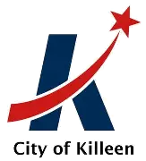

“Did an excellent job from start to finish. They were professional, reliable, and easy to work with throughout the entire process. The quality of their work was outstanding, and they paid close attention to detail while making sure everything was completed the right way. I really appreciated their communication, honesty, and commitment to getting the job done well. I would highly recommend Casmir Contracting Company LLC to anyone looking for dependable, high-quality construction work.”Hayden Eastwood
 Casmir Contracting Company | LLC
Casmir Contracting Company | LLCVeteran Family Owned • Central Texas
Where Every Build Begins.
Casmir Contracting Company | LLC delivers dependable sitework solutions—including land clearing, excavation, grading, drainage, hauling, and site preparation—across Bell, Williamson, and Travis counties.
Hard work.
Honest results.
Casmir Contracting Company is a local, veteran- and family-owned contractor focused on practical sitework, clear communication, and dependable service from estimate to completion.
What We Do
From raw land to construction-ready.
Our service pages provide a clear overview of Casmir’s capabilities, helping clients identify the right solution and take the next step toward a project estimate.

SITE OPENING
Land Clearing & Vegetation Management
Brush removal, tree clearing, and site opening for residential, commercial, and development properties.
Learn More →
DIRT WORK
Excavation & Earthwork
Full-service excavation solutions managed from start to finish, including trenching, grading prep, and material movement.
Learn More →
BUILD READY
Site Preparation & Development
Laying the groundwork for your development with clean, construction-ready site preparation.
Learn More →
SITE STABILITY
Grading & Drainage Solutions
We manage grading and drainage work to support proper site leveling, water flow, and long-term stability.
Learn More →
CLEAN FINISH
Debris Removal & Site Cleanup
Efficient removal of land clearing debris and construction waste, leaving your site clean and ready for the next phase.
Learn More →
MOVING MATERIAL
Material Hauling & Transport
Coordinated hauling support for dirt, rock, brush, debris, lumber, and project materials throughout Central Texas.
Learn More →Our Mission
We prepare the ground for everything that comes next.
I started Casmir Contracting Company | LLC to build a business grounded in hard work, discipline, and service. My experience as an Army Horizontal Construction Engineer shapes the dependable work, clear communication, and pride we bring to every project.
ReliableLocalSite-Ready
Service Area
Central Texas roots. Regional reach.
Providing dependable sitework services for residential and commercial projects throughout Bell, Williamson, and Travis counties.
Casmir Coverage
Cities & Towns We Serve
Bell County service area
Temple
Belton

Harker Heights
Salado
Morgan’s Point Resort
Nolanville
Troy
Temple
Belton
Killeen
Harker Heights
Salado
Morgan’s Point Resort
Nolanville
Troy
Client Reviews
Dependable work, proven by the people we serve.
★★★★★
Real client feedback highlighting Casmir’s professionalism, communication, attention to detail, and commitment to doing the job the right way.
Contact Us
Request a project estimate
Select the service you need and send the basics. For urgent needs, call or text (512) 967-3242.